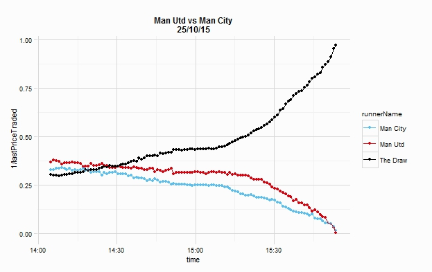

This vignette will walk through the (theoretical) use of betfaiR to collect data over time - this will be useful for collecting data about markets, to potentially build models and establish trading strategies. I will try to explain how to perform similar tasks on both Windows and Linux/OSX machines, this will involve creating an R script and using a Task scheduler (Task Scheduler on Windows and cron on Linux/OSX). As an example, the plot below shows the Betfair odds during the course of a football game between Manchester United and Manchester City:

There are a few things that we will need to do:
Our script will need to log in to betfair, filter markets, retrieve market data before saving it somewhere:
library(betfaiR)
bf <- betfair(usr = Sys.getenv("BETFAIR_USR"),
pwd = Sys.getenv("BETFAIR_PWD"),
key = Sys.getenv("BETFAIR_KEY"))
markets <- bf$marketCatalogue(filter = marketFilter(eventTypeIds = 1,
marketCountries = "GB"))